Night Elf — legs
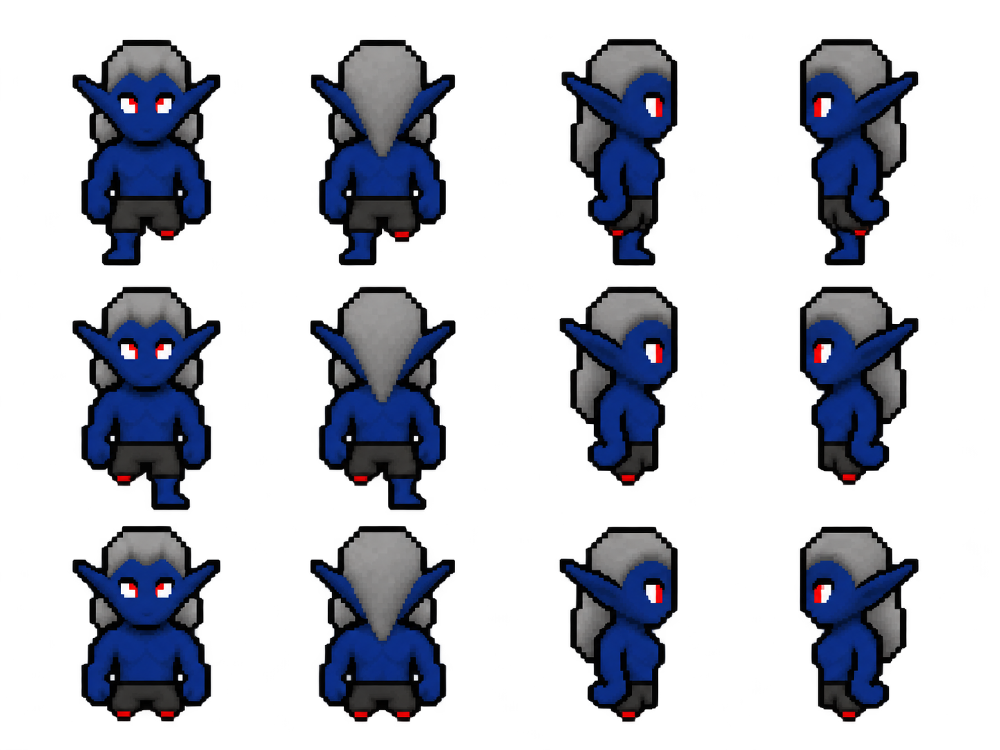
Actual AI-generated source art. These drafts need injury-state, laterality, alignment and animation review before game integration. Click a sheet to open its original image. Existing game assets remain unchanged.
Arms: missing left, missing right, missing both. Legs: missing left, missing right, missing both. Pieces: left arm, right arm, left leg, right leg. Columns: front, back, right-facing, left-facing. These are requested layouts; each draft still requires visual verification.

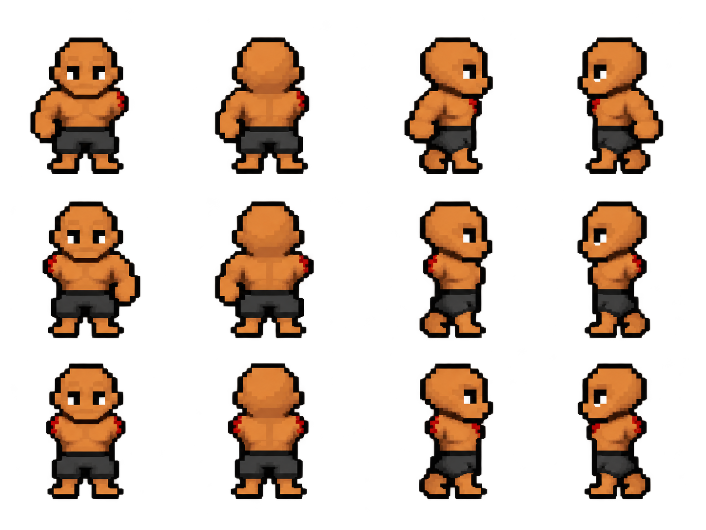
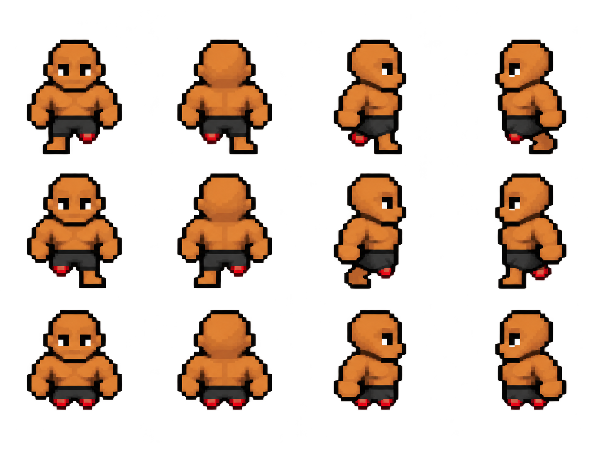
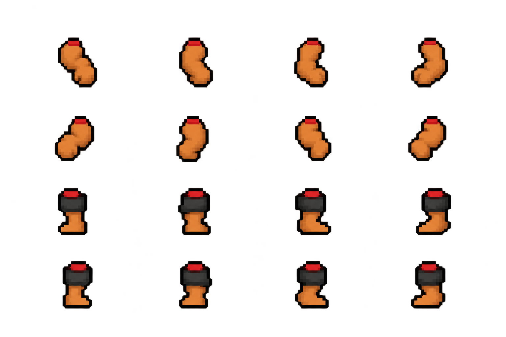
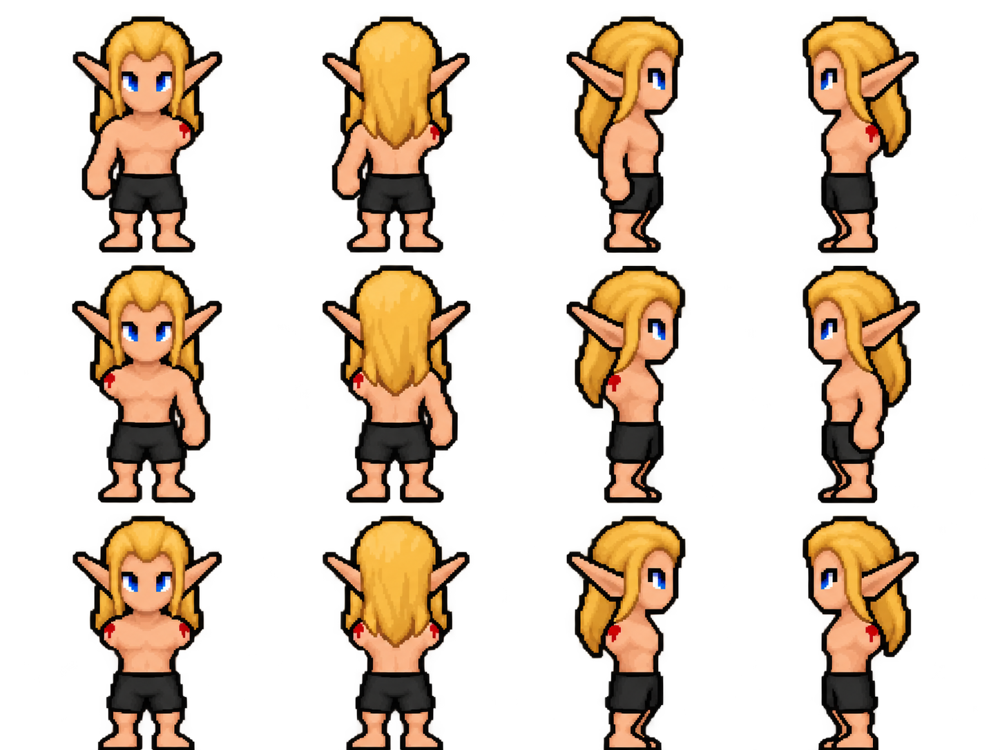
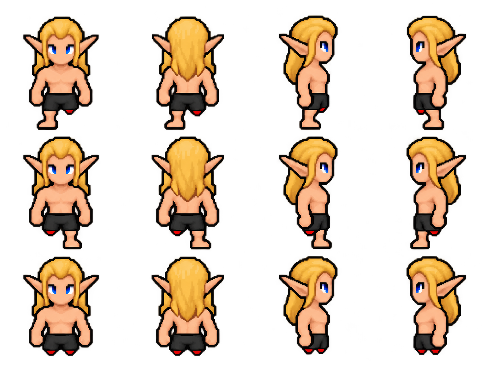
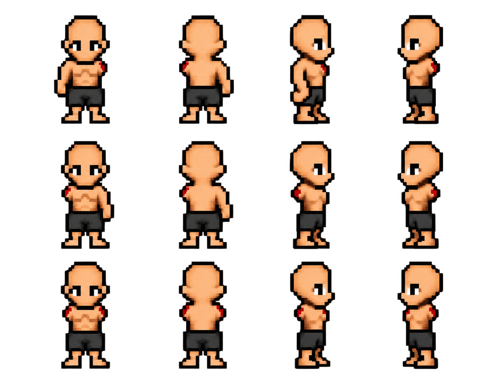
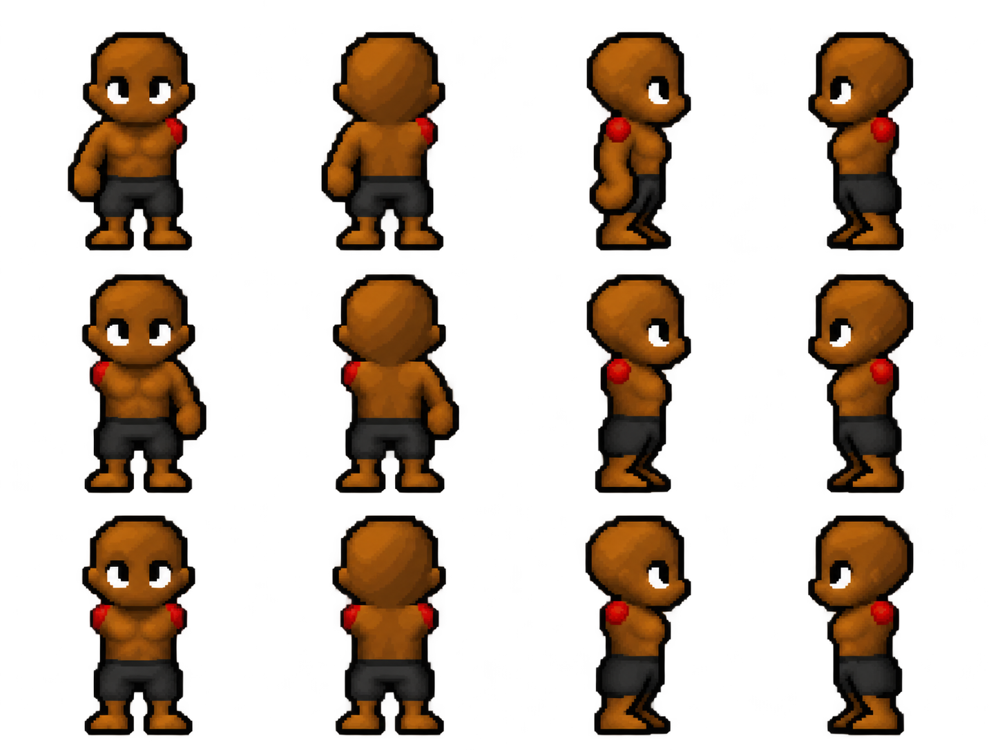
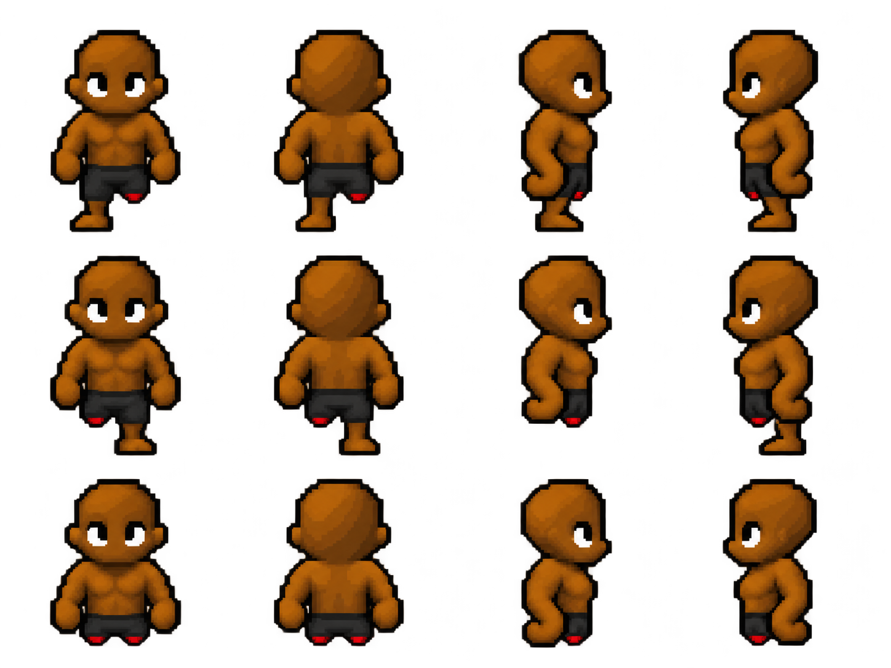
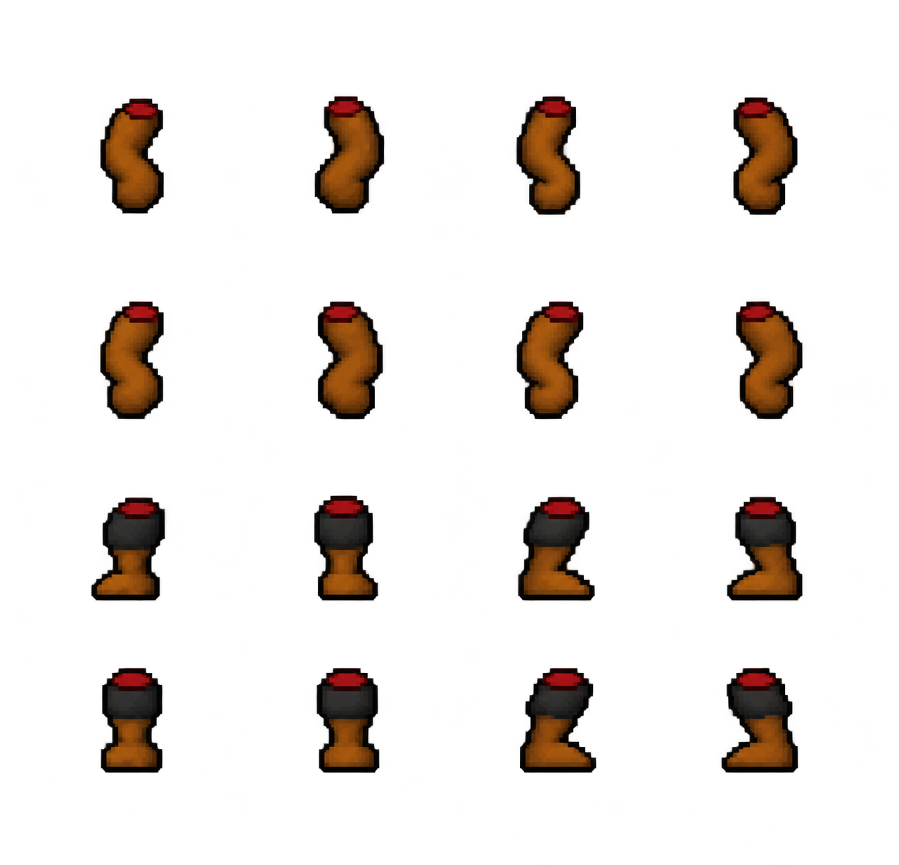
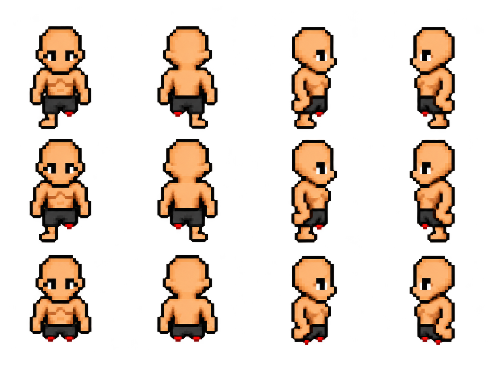